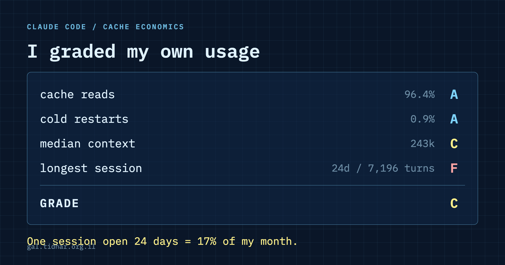

Claude Code · 58,617 turns · 396 sessions · 30 days
Four people pushed back on my cache post. I graded myself and got a C
Last week I wrote that I cannot hit my Claude Code limit. The comments were better than the post. Four people took it apart, and one of them asked a question I could not answer from memory, so I went back to the raw logs. The thing I had missed is not subtle: a token added early in a long session is re-read once per remaining turn. Averaged across my sessions, that is 992 times.

The pushback
Roki Hasan made the argument that sent me back to the logs:
Subagents keep the parent prefix stable, but each one starts cold, so you pay full price for its context. Net win when the subagent takes a long input and returns something short. Net loss when it hands back something long. What I watch now is the size of what comes back, not the size of what goes in.
He is right about the metric and wrong about the mechanism, and the correction is the most useful thing I learned all week.
A subagent's result does not invalidate anything. It is appended to the end of the conversation, and appending never breaks a prefix cache; only changing bytes that are already in the prefix does that. So a long return is not a cache miss.
It is worse in a quieter way. Those tokens now sit in the context and get re-read on every remaining turn of the session. Cheap each time, permanent for the rest of the session. The cost of anything you add is not its size. It is:
size x turns remainingWhich means the same 2,000-token result costs wildly different amounts depending on when it lands. Early in a long session it is expensive. Near the end it is nearly free. That is the part neither of us had.
How big is the multiplier
Weighted across all 396 sessions, the average token I add is re-read 992 times before its session ends. In my largest session it is far worse:
My largest session ran 7,196 turns. A single paragraph added to it around turn 100 is re-read roughly seven million times before that session ends. Not seven thousand. Seven million, because it is re-read on each of the remaining 7,096 turns.
This reframes every piece of advice in the original post. "Push noisy work into a subagent" is right, but not because it moves volume around. It is right because it keeps the main context small, and the main context is the thing being multiplied.
The one-hour cliff, measured
I claimed in the first post that the cache lives about an hour. Here is the shape of it. Each row is the average cache write on a turn, grouped by how long it had been since the previous turn in that same session:
| Gap since previous turn | Turns | Avg cache write | Write share |
|---|---|---|---|
| under 1 min | 53,873 | 8,252 | 2.6% |
| 1-5 min | 2,060 | 15,383 | 5.1% |
| 5-30 min | 1,161 | 17,376 | 5.3% |
| 30-60 min | 594 | 21,307 | 5.0% |
| 1-2 h | 216 | 206,024 | 60.2% |
| 2-6 h | 144 | 312,973 | 92.8% |
| over 6 h | 173 | 304,419 | 94.8% |
The cliff is exactly where the documentation says it is, and the step is about 38x. A single short message typed into yesterday's session rebuilds that entire conversation at full price. It is the most expensive thing you will do that day and it looks like a small question.
The flip side of that table is the uncomfortable finding. 92.5% of my turns arrive within 60 seconds of the previous one. Only 0.92% follow a gap over an hour. I had been telling myself that configuration and discipline were keeping me under the limit. A large part of it is just that I work in continuous bursts and rarely walk away mid-session.
Where the money actually is
Sessions, grouped by how many turns they ran. The right-hand column uses standard published multipliers (cache read 0.1x, cache write 1.25x, output 5x) applied to my token counts. It is a model of relative cost, not an invoice:
| Turns per session | Sessions | Share of modelled cost |
|---|---|---|
| 1-10 | 93 | 0.7% |
| 11-50 | 186 | 2.6% |
| 51-200 | 62 | 5.3% |
| 201-1000 | 43 | 29.8% |
| 1000+ | 12 | 61.6% |
Twelve sessions out of 396 are most of the bill. One of them had been open for 587 hours — 24 days — across 7,196 turns at an average context of 431k tokens. On its own it was about 17% of my month. I never closed it because there was never a moment that felt like the end of the task.
That is the lever the original post did not mention at all, and it is bigger than any setting I spent weeks tuning.
Grade yourself
Rather than ask anyone to trust my numbers, here is the script that produced them. It reads your local transcripts and prints the same four grades. Nothing leaves your machine.
curl -fsSL https://raw.githubusercontent.com/tatarco/claude-code-starter/main/scripts/usage-report.py \
-o /tmp/usage-report.py && python3 /tmp/usage-report.pyAdd --share before pasting the output anywhere: the default names the project directory of your heaviest session.
CLAUDE CODE USAGE - last 30 days
58,432 turns across 396 sessions
cache reads 96.4% A
cold restarts 0.9% of turns A
median context 243k C
longest session 24d / 7,196 turns F
---------------------------------------------
GRADE C
FIX FIRST: longest session (24d / 7,196 turns) - every token in it is
re-read once per remaining turn.
Close it. New task = new session.That run is a few minutes later than the dataset the tables above were built from, which is why the turn count differs slightly. The window is a rolling 30 days and the logs grow while you work, so these numbers move. Treat the grades as the stable part and the raw counts as a snapshot.
The thresholds are published so you can argue with them rather than trust them:
| Metric | A | B | C | D | F |
|---|---|---|---|---|---|
| cache reads | ≥95% | ≥90% | ≥80% | ≥65% | below |
| cold restarts | ≤2% | ≤5% | ≤10% | ≤20% | above |
| median context | <100k | <200k | <350k | <600k | above |
| longest session | ≤200 turns | ≤500 | ≤1500 | ≤4000 | above |
What I would tell you now
- Close the session you forgot about. Check how long it has been running first, so the number lands. This is the big one.
- Coming back after an hour or more? Start a new session. Do not type one line into yesterday's giant conversation.
- New task, new session. A long session feels economical because everything is already loaded. It is the opposite: everything already loaded is re-read every turn.
- Then worry about settings. They help. Session length helps more.
Method, and what I am not claiming
Everything here comes from the raw JSONL transcripts under ~/.claude/projects/, covering 58,617 assistant turns across 396 sessions in the 30 days to 2026-08-09. Every turn carries its own usage block, so the token counts are read rather than estimated.
Two honest caveats. First, the earlier post's subagent figures came from ccusage over a 59-day window; this piece measures the transcripts directly over 30 days, so the two sets of numbers are not directly comparable and I have not tried to force them into agreement. Second, subagents keep their own transcripts outside these files, so the only trace of them here is the summary record their parent receives — which means this analysis describes main-session behaviour, and I am not making a claim about total subagent volume either way.
The cost percentages are a model built from published price multipliers, not a bill. The token counts, the timing gaps and the session lengths are all measured.
Thanks
To Roki Hasan for the question that started this, Roy Perez for asking what happens when you switch models mid-session, Moti Atedgi for calling it household budgeting, which is still the best description anyone has offered, and Chaim Thee for asking me to turn it into something importable, which is why the script above exists.